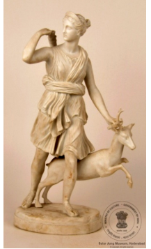

🔇 Is bhasha me is vastu ka audio abhi uplabdh nahi hai.
4. MS - 3025: हिरण के साथ डायना

4. MS - 3025
प्राचीन मूर्ति जिसमें डायना को दर्शाया गया है। डायना वेल्स की राजकुमारी नहीं बल्कि रोमन पौराणिक कथाओं में चंद्रमा, वन्य जीवन, प्रकृति और शिकार की देवी हैं। डायना, ग्रीक कुंवारी देवी आर्टेमिस के लैटिन समकक्ष हैं, और वह झरनों और नदियों की रक्षक तथा जंगली जानवरों की संरक्षक मानी जाती थीं। कला में उन्हें अक्सर युवा शिकारी के रूप में धनुष और तीर के साथ दिखाया जाता है। इस मूर्ति में डायना के पास एक हिरण है और वह शिकार में व्यस्त दिखाई देती हैं। उनकी मुद्रा यह दर्शाती है कि वह अपना लदा हुआ धनुष वापस ला रही हैं या अपने तरकश से तीर लेने के लिए कंधे के पीछे झुक रही हैं। यह क्लासिक सफेद संगमरमर की प्रतिमा जर्मनी की है और 19वीं शताब्दी में बनाई गई थी।
4. MS - 3025: Diana with Deer
4. MS - 3025
An antique sculpture depicting Diana. Diana is not the Princess of Wales but the Roman goddess of the moon, wildlife, nature and the hunt. Diana is the Latin counterpart of the Greek virgin goddess Artemis, and she was regarded as the guardian of springs and rivers and the protector of wild animals. In art she is often shown as a young huntress with a bow and arrows. In this sculpture Diana is accompanied by a deer and appears engaged in the hunt. Her posture suggests that she is drawing back her loaded bow, or reaching behind her shoulder to take an arrow from her quiver. This classical white marble statue is from Germany and was made in the 19th century.
4. MS - 3025: జింకతో కూడిన డయానా (DIANA WITH DEER)
4. MS - 3025
ఈ సాంప్రదాయ పద్దతిలో ఉన్న తెలుపు పాలరాతి చిన్న విగ్రహం (statuette) 19వ శతాబ్దానికి చెందిన జర్మన్ కళాఖండం. ఈ విగ్రహం డయానా (Diana)ను చూపుతుంది. రోమన్ పురాణాలలో ప్రకారం డయానా చంద్రుడు, అడవి జంతువులు, ప్రకృతి మరియు వేట దేవతగా కొలుస్తారు. గ్రీకు దేవత ఆర్టెమిస్ యొక్క లాటిన్ రూపమైన డయానా, జలధారలకు రక్షకురాలు మరియు స్వేచ్ఛా జంతువులను సంరక్షించేదిగా పరిగణించబడింది. కళలో ఆమెను సాధారణంగా విల్లు మరియు బాణాలతో ఉన్న యువ వేటగాతిగా చూపుతారు. ఈ బొమ్మలో డయానా వేటలో నిమగ్నమై, పక్కన ఒక జింకతో కనిపిస్తుంది. ఆమె భంగిమను బట్టి, ఆమె ఎక్కుపెట్టిన విల్లును వెనక్కి తీసుకుంటున్నట్లు లేదా తన అమ్ములపొది (quiver) నుండి బాణాన్ని తీసుకునేందుకు భుజంపైకి చేయి చాపుతున్నట్లు తెలుస్తోంది.
3. XV - 11: சுவர் அலங்கார பலகை(WALL PLAQUE)
3. XV - 11
இதுபுராதன சிற்பம்,டயானாஎன்பது இளவரசியைக் குறிக்கிறது. ரோமானிய புராணங்களில்டயானாஎன்பதுநிலா, காட்டுவிலங்குகள், இயற்கைமற்றும்வேட்டை ஆகியவற்றின் தேவதையாகக் கருதப்படுகிறார். கிரேக்கப்புராணத்தின்கன்னி தேவதையான ஆர்டெமிஸுக்குஇணையானலத்தீன்தேவதையாக டயானாஅறியப்படுகிறார். ஊற்றுகளையும்ஆறுகளையும்காக்கும்தேவதையாகவும், கட்டுப்பாடின்றிவாழும்காட்டுவிலங்குகளின்பாதுகாவலராகவும்அவர்கருதப்படுகிறார்.இச்சிலையில் டயானாபொதுவாகவில்மற்றும்அம்புகளைஏந்தியஇளம்வேட்டைக்காரியாகசித்தரிக்கப்படுகிறார். இந்தஉருவச்சிலையில்அவர்அருகில்ஒருமான்காணப்படுகிறது; இதுவேட்டையில்ஈடுபட்டிருப்பதைஉணர்த்துகிறது. அவரதுஉடல்நிலை, அவர்பயன்படுத்தியவில்லைமீண்டும்வைத்துக்கொள்வதுஅல்லதுதோளுக்குமேல்உள்ளஅம்புக்கூட்டிலிருந்துஒருஅம்பைஎடுக்கமுனைவதுபோன்றதோற்றத்தைஅளிக்கிறது.இந்தபாரம்பரியவெள்ளைபளிங்கு சிற்பம்ஜெர்மனியைச்சேர்ந்தது; இது 19ஆம்நூற்றாண்டில்உருவாக்கப்பட்டது.”
4. MS - 3025: हरणासोबत डायना
4. MS - 3025
डायनाचे चित्रण असलेली प्राचीन मूर्ती. डायना ही वेल्सची राजकुमारी नसून रोमन पुराणकथांमधील चंद्र, वन्यजीवन, निसर्ग आणि शिकार यांची देवी आहे. डायना ही ग्रीक कुमारी देवी आर्टेमिसची लॅटिन समकक्ष असून ती झरे व नद्यांची रक्षक आणि वन्य प्राण्यांची संरक्षक मानली जात असे. कलेत तिला अनेकदा धनुष्य-बाणासह तरुण शिकारीच्या रूपात दाखवले जाते. या मूर्तीत डायनासोबत एक हरीण असून ती शिकारीत गुंतलेली दिसते. तिची मुद्रा असे दर्शवते की ती आपले सज्ज धनुष्य मागे खेचत आहे किंवा भात्यातून बाण घेण्यासाठी खांद्यामागे वाकत आहे. ही अभिजात पांढऱ्या संगमरवराची मूर्ती जर्मनीची असून १९व्या शतकात घडवण्यात आली होती.
4. എം. എസ്-3025: മാനിനോടൊപ്പമുള്ള ഡയാന
4. എം. എസ്-3025
ഡയാന ദേവതയുടെ പുരാതനമായ ഒരു ശില്പമാണിത്. റോമൻ പുരാണങ്ങളിൽ ചന്ദ്രൻ, വന്യജീവികൾ, പ്രകൃതി, നായാട്ട് എന്നിവയുടെ ദേവതയാണ് ഡയാന. ഗ്രീക്ക് പുരാണത്തിലെ കന്യകാദേവിയായ ആർട്ടെമിസിന് തുല്യമായ സ്ഥാനമാണ് ലാറ്റിൻ ദേവതയായ ഡയാനയ്ക്കുള്ളത്. അരുവികളുടെയും നീരുറവകളുടെയും സംരക്ഷകയായും വന്യമൃഗങ്ങളുടെ കാവൽക്കാരിയായും ഇവർ അറിയപ്പെടുന്നു.
4. MS - 3025: ಡಿಯಾನಾ ವಿಥ್ ಡೀರ್
4. MS - 3025
ಡಯಾನಾಳ ಪ್ರಾಚೀನ ಶಿಲ್ಪ, ಇವಳು ವೇಲ್ಸ್ನ ರಾಜಕುಮಾರಿ. ರೋಮನ್ ಪುರಾಣದ ಪ್ರಕಾರ, ಡಯಾನಾ ಚಂದ್ರ, ವನ್ಯಜೀವಿ, ಪ್ರಕೃತಿ ಮತ್ತು ಬೇಟೆಯ ದೇವತೆ. ಗ್ರೀಕ್ ಕನ್ಯಾ ದೇವತೆಯಾದ ಆರ್ಟೆಮಿಸ್ಗೆ ಸಮಾನವಾದ ಲ್ಯಾಟಿನ್ ದೇವತೆಯಾದ ಡಯಾನಾ, ನೀರಿನ ಬುಗ್ಗೆಗಳು ಮತ್ತು ತೊರೆಗಳ ರಕ್ಷಕಿಯಾಗಿದ್ದಳು ಹಾಗೂ ಕಾಡು ಪ್ರಾಣಿಗಳ ಪಾಲಕಿಯಾಗಿದ್ದಳು. ಕಲೆಯಲ್ಲಿ ಆಕೆಯನ್ನು ಹೆಚ್ಚಾಗಿ ಬಿಲ್ಲು ಮತ್ತು ಬಾಣಗಳನ್ನು ಹಿಡಿದ ಯುವ ಬೇಟೆಗಾರತಿಯಾಗಿ ಚಿತ್ರಿಸಲಾಗುತ್ತದೆ. ಈ ಶಿಲ್ಪದಲ್ಲಿ ಆಕೆಯ ಪಕ್ಕದಲ್ಲಿ ಒಂದು ಜಿಂಕೆಯಿದ್ದು, ಆಕೆ ಬೇಟೆಯಲ್ಲಿ ತೊಡಗಿರುವಂತೆ ಚಿತ್ರಿಸಲಾಗಿದೆ. ಆಕೆಯ ಭಂಗಿಯನ್ನು ಗಮನಿಸಿದರೆ, ಆಕೆ ತನ್ನ ಬಾಣ ಹೂಡಿದ ಬಿಲ್ಲನ್ನು ಹಿಂದಕ್ಕೆ ಎಳೆಯುತ್ತಿದ್ದಾಳೆ ಅಥವಾ ಬಾಣದ ಬತ್ತಳಿಕೆಯಿಂದ ಬಾಣವನ್ನು ತೆಗೆಯಲು ತನ್ನ ಭುಜದ ಮೇಲಿಂದ ಕೈ ಚಾಚುತ್ತಿದ್ದಾಳೆ ಎಂಬುದು ಸ್ಪಷ್ಟವಾಗುತ್ತದೆ. ಕ್ಲಾಸಿಕ್ ಬಿಳಿ ಅಮೃತಶಿಲೆಯ ಈ ಪ್ರತಿಮೆಯು ಜರ್ಮನಿಗೆ ಸೇರಿದ್ದು, ಇದನ್ನು 19ನೇ ಶತಮಾನದಲ್ಲಿ ರಚಿಸಲಾಗಿದೆ.
4. MS - 3025: ହରିଣ ସହିତ ଡାଏନା
4. MS - 3025
ୱେଲ୍ସର ରାଜକୁମାରୀ ଡାଏନାଙ୍କର ଏହା ଗୋଟିଏ ପ୍ରାଚୀନ ପ୍ରତିମୂର୍ତ୍ତି। ରୋମାନ ପୌରାଣିକ କାହାଣୀ ଅନୁସାରେ, ଡାଏନା ହେଉଛନ୍ତି ଚନ୍ଦ୍ର, ବନ୍ୟପ୍ରାଣୀ, ପ୍ରକୃତି ଏବଂ ଶିକାରର ଦେବୀ। ଗ୍ରୀକ୍ର କୁମାରୀ ଦେବୀ ଆର୍ଟେମିସ୍ଙ୍କସମକକ୍ଷ ହେଉଛନ୍ତି ଲାଟିନ୍ ଦେବୀ ଡାଏନା,ଯିଏ ଝରଣା ଏବଂ ନଦୀର ରକ୍ଷାକର୍ତ୍ତୀଅଟନ୍ତି, ଏବଂ ବନ୍ୟ ପ୍ରାଣୀଙ୍କ ପାଳନଧାତ୍ରୀ ମଧ୍ୟ। ତାଙ୍କୁ ପ୍ରାୟତଃ ବିଭିନ୍ନ କଳାକୃତିରେ ଧନୁ ଏବଂ ତୀର ଧରିଥିବା ଜଣେ ଯୁବ ଶିକାରୀ ଭାବରେ ଚିତ୍ରଣ କରାଯାଇଥାଏ। ଏହି ମୂର୍ତ୍ତିରେ, ତାଙ୍କୁ ଗୋଟିଏ ହରିଣ ସହ ଶିକାର କରୁଥିବାର ଚିତ୍ରଣ କରାଯାଇଛି। ତାଙ୍କ ସ୍ଥିତିରୁ ଜଣାପଡୁଛି ଯେ ସେ ତାଙ୍କ ତୂଣୀରୁ ଧନୁ ବାହାର କରୁଛନ୍ତି କିମ୍ବା ତାଙ୍କ ତୂଣୀରରୁ ତୀର ଆଣିବା ପାଇଁ ତାଙ୍କ କାନ୍ଧ ଉପରକୁ ହାତ ବଢାଉଛନ୍ତି। ଏହି କ୍ଲାସିକ୍ ଧଳା ମାର୍ବଲ ପ୍ରତିମାଟି ଜର୍ମାନୀରୁ ଆସିଛି ଯାହା 19ଶ ଶତାବ୍ଦୀରେ ତିଆରି ହୋଇଥିଲା।
4. MS - 3025: হরিণের সঙ্গে ডায়না
4. MS - 3025
ডায়ানার একটি প্রাচীন ভাস্কর্য, যিনি ছিলেন ওয়েলসের রাজকুমারী। রোমান পৌরাণিক কাহিনীতে ডায়ানা হলেন চন্দ্র, বন্যপ্রাণী, প্রকৃতি এবং শিকারের দেবী। গ্রীক কুমারী দেবী আর্টেমিসের ল্যাটিন সমরূপ এই ডায়ানা ছিলেন ঝরনা ও প্রাকৃতিক স্রোতস্বিনীর রক্ষাকর্তা এবং বন্য প্রাণীদের অভিভাবক। শিল্পকলায় তাঁকে প্রায়শই তীর ও ধনুক হাতে একজন তরুণ শিকারি রূপে চিত্রিত করা হয়। এই মূর্তিতে তাঁকে শিকাররত অবস্থায় একটি হরিণের সাথে দেখা যাচ্ছে। তাঁর ভঙ্গি দেখে মনে হয় যে তিনি তার ধনুকে তীর যোজনা করছেন অথবা কাঁধের ওপর হাত বাড়িয়ে তূণীর থেকে তীর বের করছেন। সাদা মার্বেলের তৈরি এই ক্ষুদ্র ধ্রুপদী মূর্তিটি জার্মানির এবং এটি ১৯ শতকের একটি নিদর্শন।
4. ایمایس-3025: ڈیاناہرنکےساتھ
4. ایمایس-3025
ڈایانا کا قدیم مجسمہ، جو ویلز کی شہزادی ہیں۔ رومی دیومالا میں ڈایانا چاند، جنگلی حیات، فطرت اور شکار کی دیوی ہیں۔ ڈایانا، یونانی کنواری دیوی آرٹیمیس کے مساوی لاطینی نام ہے۔ وہ چشموں اور ندیوں کی محافظ اور جنگلی جانوروں کی رکھوالا تھیں۔ فن میں انہیں اکثر نوجوان شکاری کے طور پر دکھایا جاتا ہے جس کے پاس کمان اور تیر ہوتے ہیں۔ اس مجسمے میں ڈایانا کے ساتھ ایک ہرن بھی ہے اور وہ شکار میں مصروف ہیں۔ ان کا جسمانی وضع اس بات کی نشاندہی کرتا ہے کہ وہ اپنی لوڈ شدہ کمان واپس لے رہی ہیں یا اپنی کمان کے بکس سے تیر نکال رہی ہیں۔ یہ کلاسیکی سفید ماربل کا مجسمہ جرمنی سے تعلق رکھتا ہے اور 19ویں صدی میں بنایا گیا تھا۔
4. MS -3025: હરણ સાથે ડાયના
4. MS -3025
ડાયનાનું પ્રાચીન શિલ્પ, તે વેલ્સની રાજકુમારી છે. રોમન પૌરાણિક કથાઓમાં ડાયના ચંદ્ર, વન્યજીવન, પ્રકૃતિ અને શિકારની દેવી છે. ગ્રીક કુંવારી દેવી આર્ટેમિસની લેટિન સમકક્ષ ડાયના, ઝરણા અને નદીઓની રક્ષક તેમજ અદમ્ય પ્રાણીઓની રક્ષક હતી. કલાકૃતિઓમાં તેણીને વારંવાર ધનુષ્ય અને તીર સાથે યુવાન શિકારી તરીકે દર્શાવવામાં આવી છે. આ આકૃતિમાં તેણીને તેની બાજુમાં એક હરણ સાથે બતાવવામાં આવી છે, જે શિકાર કરતો દેખાડવામાં આવ્યો છે. તેણીની મુદ્રા સૂચવે છે કે તેણી તેના ભરેલા ધનુષ્યને પાછી લાવી રહી છે અથવા ખભે હાથ મૂકી તેના તરવણીમાંથી તીર કાઢવા જઇ રહી છે. ઉત્કૃષ્ટ સફેદ આરસપહાણની પ્રતિમા જર્મનીથી છે અને 19મી સદીમાં બનાવવામાં આવી હતી.